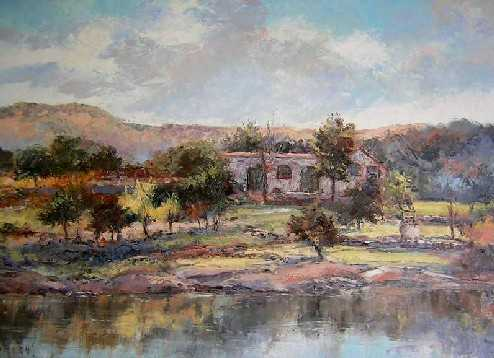
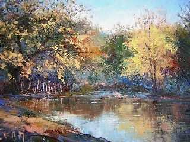
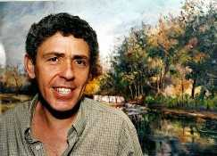

La magia de un pincel
Entrevista con el artista en pintura Néstor Verón.
"Siempre me gustó dibujar y pintar.
Estaba cursando el Secundario cuando pude contemplar un paisaje típico
de Inglaterra, obra del pintor Turner. Me impresionó la bruma que envolvía
su entorno.
Fue entonces cuando despertó en mí el ansia por "pintar"
y comencé sin ningún tipo de conocimiento sobre el tema. Tendría
unos 20 años de edad, cuando
conocí al Licenciado en Escultura
René Villada y él comenzó a darme las bases de cómo
concretar este arte. Dado que tenía acceso a la Biblioteca Mayor
de la
Universidad Nacional de Córdoba, leí mucho sobre pintura y la
vida de pintores famosos: Cómo vivieron, cómo materializaban su
obra en cuanto
a técnica, qué colores utilizaban...
 |
Soy autodidacta. Aprendí
"mirando" La única forma es "ver" la naturaleza,
como es. Respetarla.Guardar un criterio prudente para originar una obra,
dar énfasis a los colores.
|
Recuerdo solíamos salir a pasar días de campo con
toda la familia, incluyendo mías tías
y abuelas. Era tan hermoso... Allí aprendí a sentir un paisaje,
un río...
Desde luego...soñé con pintarlo; que lo vieran
otros.
No me agrada interpretar
el paisaje imponente a los ojos. Tampoco, el realizar obras por encargo.
Necesito sentir lo que hago, valoro los detalles y elijo los rincones
o una parte. Escucho música suave mientras pinto, es un acompañamiento
necesario.
|
 |
Para apreciar una pintura debe tenerse en cuenta
dos aspectos: La técnica y el alma. Los colores dan cuenta del clima
que trata de comunicar.
Lo técnico es básico para tener autoridad
en lo que se está realizando, pero lo esencial es de carácter
espiritual; la fuerza que tal carácter trasmite es lo que llega a los
demás
y es una síntesis de la esencia del artista."
 |
Néstor Verón
vive con su esposa y sus cuatro hijos en la Ciudad de Villa Allende, Provincia
de Córdoba, Argentina. Sus primeras muestras en pintura datan del
año 1981 y desde entonces no ha cesado en la realización
artística en el género de la pintura neo-impresionista.
Dotado de una personalidad vivaz y romántica, proyecta fundamentalmente
sencillez y humildad, lo que le confiere la exquisitez propia de un artista
de la talla de su esplendor.
Una expresión acabada de su vida y
obra, puede contemplarse en su página Web personal: |